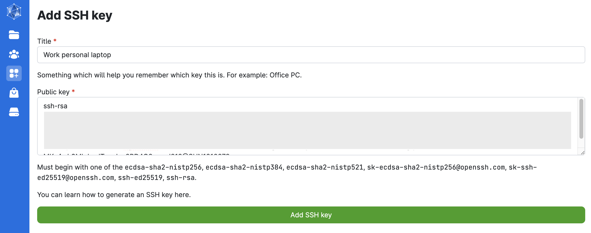
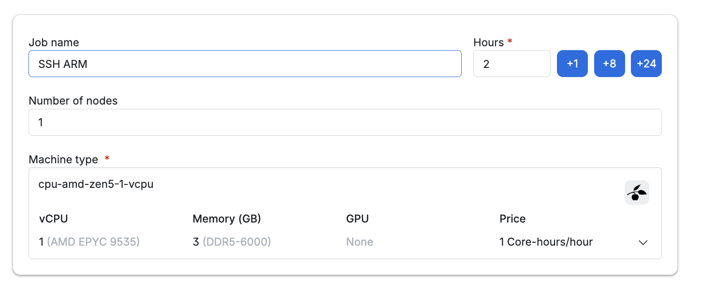
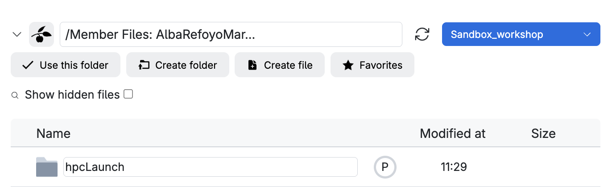
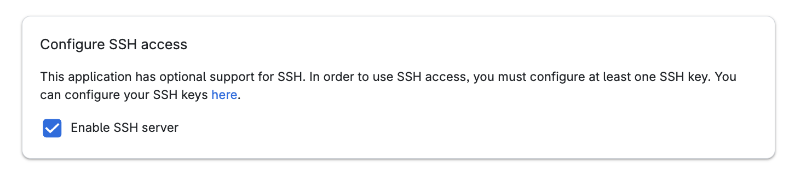
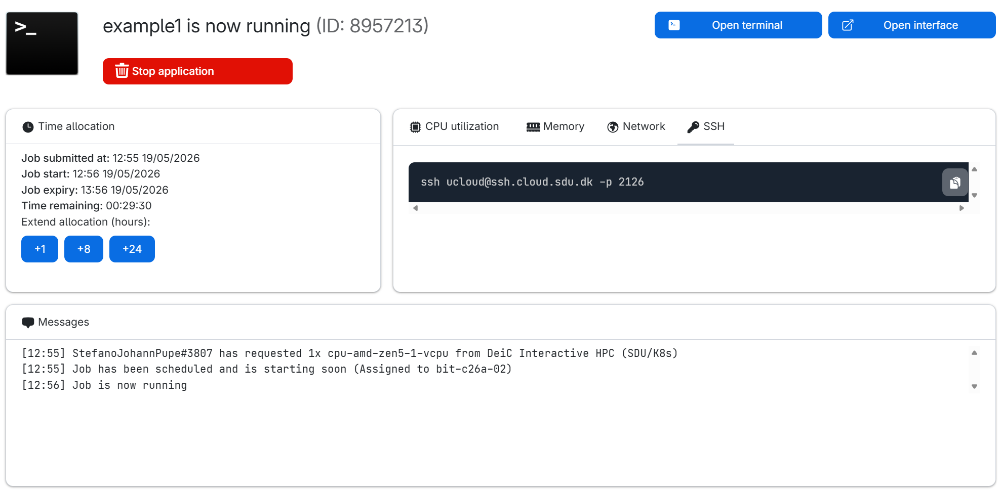

HPC setup
1. SSH keys
Local host keys
Navigate to the location where all SSH keys are stored to generate a new one. Do you have any host keys stored locally?
SKIP these first two commands if you haven’t used SSH keys before (the path won’t exit if you’ve never created a key).
Mac/Linux
cd ~/.ssh
cat ~/.ssh/known_hosts
Windows
cd C:\Users\<YourUsername>\.ssh
cat C:\Users\<YourUsername>\.ssh/known_hosts1.1. Generate SSH Key Pair
We will specify the type of key to create with the option -t (default) and use a filename that describes what the key is for (e.g. id_UCloud). Don’t enter a passphrase (for now!):
ssh-keygen -t ed25519Generating public/private ed25519 key pair.
Enter file in which to save the key (/Users/gsd818/.ssh/id_ed25519): id_UCloud
Your identification has been saved in id_UCloud
Your public key has been saved in id_UCloud.pub
...Windows users only
ssh-keygen not working?
This might be due to broken permissions.
When you run the command above and ~/.ssh does not exist → it is created automatically. IF this didn’t happen in your system, run the following command:
mkdir -p ~/.ssh
ssh-keygen -t ed25519ssh-agent service disabled?
There is one additional thing you need to take care of. By default, the ssh-agent service is disabled on Windows, so make sure you’re running as an Administrator.
On Powershell
# Configure it to start automatically.
Set-Service -Name ssh-agent -StartupType Automatic
# Start the service
Start-Service ssh-agent
# This should return a status of Running
Get-Service ssh-agent
On WSL (Windows Subsystem for Linux)
eval `ssh-agent -s`On MombaXterm, follow the instructions here.
1.2. Add private key to ssh-agent
Once, we have generated your SSH keys, add the key to your system:
## Now load your key files into ssh-agent
ssh-add id_UCloudDo you get a message similar to this? entity added: id_UCloud (gsd818@SUN1029429)
1.3. Copy SSH Key to remote server
Then, copy the public key, either using cat to print the content of the file or as follows:
cat id_UCloud.pub | pbcopy You can now paste the public SSH key on UCloud.

You’ll need to enable SSH access when you submit a job so you can SSH in.
Start a UCloud job with SSH access.
Submit a job from the terminal app and follow these configuration steps (job settings):
- Enter a job name (descriptive of the task, e.g.: SSH myname)
- Select the time (in hours) we want to use a node for (it can be modified afterwards!). Let’s do 2h.
- Number of nodes: 1
- Machine type: and the machine type (selecting a 1 CPU standard node with 3GB memory).

Add folders to access while in this job . We recommend creating a new folder named HPCLaunch in your personal drive, where you can store all files generated during the workshop (e.g.:
/Member Files: username/HPCLaunch).
Scroll down and remember to click on Enable SSH access.

Now you are ready to click on the submit button (and wait!).
Once the job starts, the SSH command appears in the progress view and can be run locally from your terminal (ssh in)

Copy the command and paste it on your terminal (e.g. ssh ucloud@ssh.cloud.sdu.dk -p 2396).